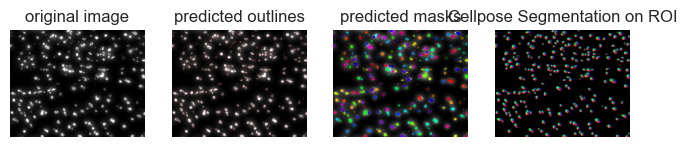
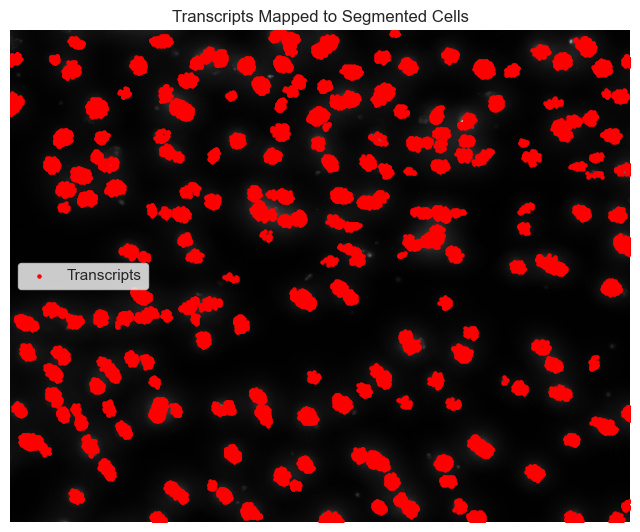
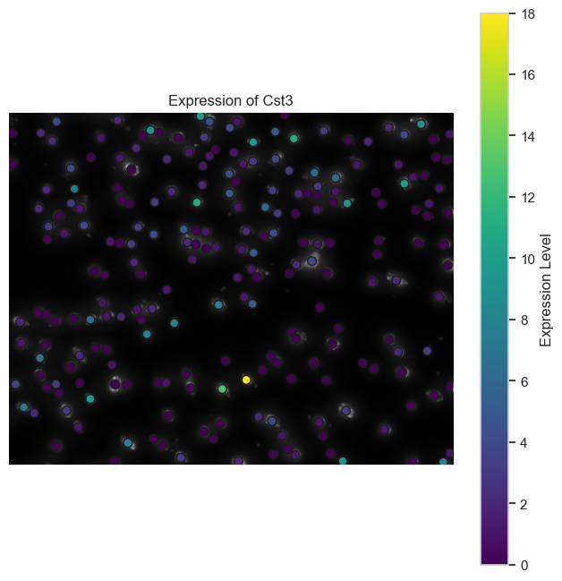
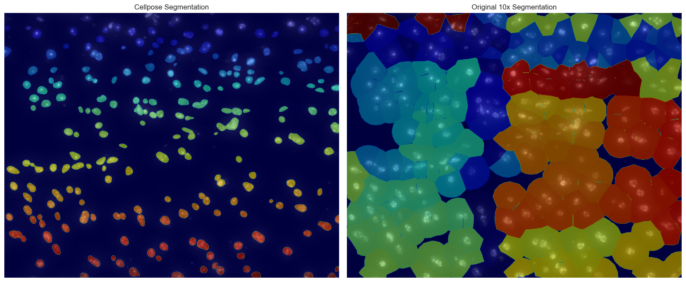
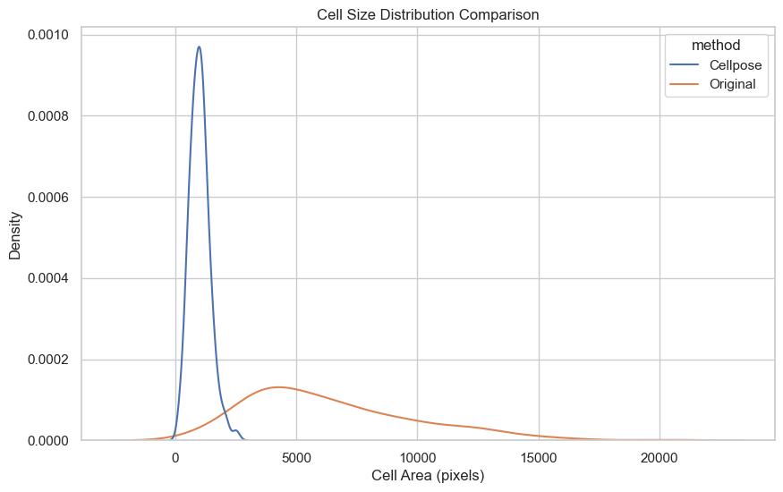

import numpy as np
import pandas as pd
import matplotlib.pyplot as plt
import seaborn as sns
from cellpose import models, io, plot
from tifffile import imread
import os
import tifffile
from cellpose import plot
import shapely.geometry as geometry
from shapely.geometry import Polygon
from shapely.affinity import translate, scale
from shapely.errors import TopologicalError
from rasterio import features
from sklearn.metrics import jaccard_score
from skimage.measure import regionprops_table
# Set up plotting aesthetics
sns.set(style='whitegrid')
%matplotlib inlineLoading and inspecting the morphology image is a foundational step in the analysis. Understanding the image’s dimensions helps guide downstream processing, including selecting channels or slices for segmentation and defining an ROI if needed.
image_data_path = 'data/Xenium_V1_FFPE_TgCRND8_17_9_months_outs/morphology.ome.tif'
image = tifffile.imread(image_data_path)
print(f"Image shape: {image.shape}")Image shape: (26, 24864, 31348)we retrieve and inspect the metadata embedded within the morphology image file. Opening the file with tifffile.TiffFile allows us to access not only the pixel data but also any associated metadata stored in OME (Open Microscopy Environment) format. By using a context manager (with statement), we ensure that the file is properly handled, meaning it will close automatically once we’re done, helping to avoid potential file-handling errors.
The OME metadata contains crucial information about the image acquisition settings. Extracting it with ome_metadata = tif.ome_metadata provides us with details about the microscope settings, pixel size, and other experimental parameters. This metadata appears in XML format, which is printed for review. Examining this data is essential to understand the spatial resolution of the image, enabling us to relate image coordinates to real-world units, such as micrometers. Knowing these specifics is key for aligning segmentation results accurately with the spatial features observed in the morphology image.
with tifffile.TiffFile(image_data_path) as tif:
ome_metadata = tif.ome_metadata
print(ome_metadata)<OME xmlns="http://www.openmicroscopy.org/Schemas/OME/2016-06" xmlns:xsi="http://www.w3.org/2001/XMLSchema-instance" Creator="tifffile.py 2022.10.10" UUID="urn:uuid:eaf5dc46-d5c3-11ed-ad40-068afc1a6c91" xsi:schemaLocation="http://www.openmicroscopy.org/Schemas/OME/2016-06 http://www.openmicroscopy.org/Schemas/OME/2016-06/ome.xsd">
<Plate ID="Plate:1" WellOriginX="-0.0" WellOriginXUnit="µm" WellOriginY="-0.0" WellOriginYUnit="µm" />
<Instrument ID="Instrument:1">
<Microscope Manufacturer="10x Genomics" Model="Xenium" />
</Instrument>
<Image ID="Image:0" Name="Image0">
<InstrumentRef ID="Instrument:1" />
<Pixels DimensionOrder="XYZCT" ID="Pixels:0" SizeC="1" SizeT="1" SizeX="31348" SizeY="24864" SizeZ="26" Type="uint16" PhysicalSizeX="0.2125" PhysicalSizeY="0.2125" PhysicalSizeZ="3.0">
<Channel ID="Channel:0:0" Name="DAPI" SamplesPerPixel="1" />
<TiffData PlaneCount="26" />
</Pixels>
</Image>
</OME>Lets preview the transcripts data again:
transcriptomics_data_path = 'data/Xenium_V1_FFPE_TgCRND8_17_9_months_outs/transcripts.csv.gz'
data = pd.read_csv(transcriptomics_data_path, compression='gzip')
print(data.head()) transcript_id cell_id overlaps_nucleus feature_name x_location \
0 281474976710656 UNASSIGNED 0 Sox10 164.48816
1 281474976710657 UNASSIGNED 0 Ctsh 169.85483
2 281474976710658 UNASSIGNED 0 Ntng1 260.06710
3 281474976710659 UNASSIGNED 0 Ntng1 269.16196
4 281474976710660 UNASSIGNED 0 Ntng1 272.35153
y_location z_location qv fov_name nucleus_distance
0 26.783148 11.713852 6.386437 A1 0.00000
1 652.652700 11.551014 27.915363 A1 0.00000
2 483.239100 12.582438 15.282572 A1 158.24005
3 409.500850 14.335079 29.190600 A1 84.09205
4 406.806150 15.083600 23.004885 A1 80.83307 Here, we are checking and handling the dimensionality of the morphology image to extract a usable 2D channel for segmentation and analysis. To start, print(f"Image dimensions: {image.ndim}") reveals the number of dimensions in the image array. Images acquired from microscopy can have multiple dimensions, often representing different z-slices, time points, or channels (e.g., specific fluorescent stains). Knowing the exact number of dimensions is essential for understanding the structure of the data and selecting the specific layer or channel needed for downstream tasks.
We then use conditional statements to select the appropriate 2D plane. If the image has five dimensions—typically representing time, Z (depth), channels, height, and width—we select the first time point, Z-slice, and channel to reduce it to 2D. Similarly, for four-dimensional images (likely Z, channels, height, and width), we choose the first Z-slice and channel. In the case of three-dimensional images, we assume they represent channels, height, and width, and extract the first channel. Finally, if the image is already 2D, we simply assign it to image_channel without further modification.
This step ensures that we have a consistent, interpretable 2D array (image_channel) for the following analysis. By isolating a single plane or channel, we simplify the data, making it easier to overlay segmentations or spatial features without the added complexity of multiple dimensions. This also ensures that our chosen channel represents the tissue morphology effectively
print(f"Image dimensions: {image.ndim}")
if image.ndim == 5:
# Example shape: (Time, Z, Channels, Height, Width)
# Select the first time point, z-slice, and channel
image_channel = image[0, 0, 0, :, :]
elif image.ndim == 4:
# Example shape: (Z, Channels, Height, Width)
image_channel = image[0, 0, :, :]
elif image.ndim == 3:
# Example shape: (Channels, Height, Width)
image_channel = image[0, :, :]
else:
# Already a 2D image
image_channel = imageImage dimensions: 3image_channel = np.max(image, axis=0)
image_channel = image_channel.astype(np.uint16)plt.figure(figsize=(8, 8))
plt.imshow(image_channel)
plt.title('Selected Image for Segmentation')
plt.axis('off')
plt.show()Since the original image is too big here we define a region of interest (ROI) within the larger image, focusing on a smaller area for more efficient and targeted analysis. This is particularly useful for high-resolution images where analyzing the entire field of view might be computationally intensive.
We begin by setting a scale_factor, which controls the size of the ROI as a fraction of the full image dimensions. Here, scale_factor = 0.05 means that the ROI will cover 5% of the original image’s width and height. Adjusting this factor allows flexibility in focusing on larger or smaller portions of the image, depending on the needs of the analysis.
Using image_channel.shape, we extract the height and width of the full image. Then, by multiplying these dimensions by scale_factor, we calculate the width and height of the ROI (roi_width and roi_height). Converting these values to integers ensures that they’re compatible with image indexing.
Finally, we make an optional adjustment to ensure that the ROI dimensions are even numbers, which can simplify image processing tasks. We do this by reducing roi_width and roi_height by 1 if they are odd, using modulo operations. This adjustment helps avoid issues when working with certain algorithms that may require even-numbered dimensions, ensuring that the ROI dimensions are compatible with a range of image processing techniques.
scale_factor = 0.05 #adjust based on the size of the img that you want to be processed
image_height, image_width = image_channel.shape
# roi
roi_width = int(image_width * scale_factor)
roi_height = int(image_height * scale_factor)
roi_width -= roi_width % 2
roi_height -= roi_height % 2
#calculate the starting and ending coordinates
x_center = image_width // 2
y_center = image_height // 2
x_start = x_center - roi_width // 2
x_end = x_center + roi_width // 2
y_start = y_center - roi_height // 2
y_end = y_center + roi_height // 2Extract the ROI from the image
roi_image = image_channel[y_start:y_end, x_start:x_end]
# dimensions
print(f"ROI image shape: {roi_image.shape}")ROI image shape: (1242, 1566)plt.figure(figsize=(8, 8))
plt.imshow(roi_image)
plt.title('ROI Image for Segmentation')
plt.axis('off')
plt.show()Next we map the ROI pixel coordinates back to real-world units (micrometers) and filter the spatial transcriptomics data to include only the transcripts within the ROI. This enables precise alignment of the transcript data with the selected region in the image.
We start by defining scaling factors for converting image pixels to micrometers. Here, x_scale and y_scale represent the conversion rate based on the pixel size provided in the image metadata: each micrometer contains approximately 4.7 pixels (1 / 0.2125). This conversion allows us to translate pixel coordinates into micrometer units, which are required for comparing and aligning data across different scales.
Using these scaling factors, we calculate the boundaries of the ROI in micrometers. For each dimension, x_start, x_end, y_start, and y_end (which are pixel coordinates from the original image), we divide by the scaling factor to obtain the corresponding boundaries in micrometers: x_start_um, x_end_um, y_start_um, and y_end_um. This step ensures that our ROI is defined consistently in both pixel and physical units.
Next, we filter the transcriptomics data to include only the transcripts located within the ROI. We use conditional filtering on the x_location and y_location columns of the data DataFrame, retaining only the transcripts whose coordinates fall within the calculated micrometer boundaries. The result is stored in roi_data, which represents the subset of transcripts that reside within our chosen ROI.
Finally, by printing len(roi_data), we get a quick count of the transcripts within the ROI.
#using the scaling factors from before
x_scale = 1 / 0.2125 # pixels per µm
y_scale = 1 / 0.2125 # pixels per µm
#roi boundaries in micrometers
x_start_um = x_start / x_scale
x_end_um = x_end / x_scale
y_start_um = y_start / y_scale
y_end_um = y_end / y_scale
#filter transcripts within the ROI boundaries
roi_data = data[
(data['x_location'] >= x_start_um) &
(data['x_location'] < x_end_um) &
(data['y_location'] >= y_start_um) &
(data['y_location'] < y_end_um)
].copy()
print(f"Number of transcripts in ROI: {len(roi_data)}")Number of transcripts in ROI: 47902Now we should subtract x_start_um from each transcript’s x_location and y_start_um from each y_location in roi_data. By doing so, we create new columns, x_location_roi and y_location_roi, that represent each transcript’s position relative to the top-left corner of the ROI rather than the full image.
roi_data['x_location_roi'] = roi_data['x_location'] - x_start_um
roi_data['y_location_roi'] = roi_data['y_location'] - y_start_umNow we finally set up the Cellpose segmentation model to identify cells within the ROI. Cellpose is a versatile deep learning-based tool commonly used for cell segmentation, especially on fluorescence and cytoplasmic images. Here, we are preparing the model for use in the analysis.
First, we import the models module from the cellpose package, which provides access to pre-trained Cellpose models. Next, we initialize a model instance using models.Cellpose(). By setting gpu=False, we specify that the model will run on the CPU. This is useful if GPU resources are unavailable, though using a GPU can speed up the segmentation process if it is an option.
We also set model_type='cyto', indicating that the model should use Cellpose’s pre-trained “cyto” (cytoplasm) model, which is optimized for identifying cell boundaries in images with visible cell structures. This choice is typically well-suited for images showing cell cytoplasm, though Cellpose offers other model types, like “nuclei,” if our focus were solely on nuclear segmentation.
from cellpose import models
model = models.Cellpose(gpu=False, model_type='cyto')/Users/rasools/miniconda3/envs/segmentation_env/lib/python3.9/site-packages/cellpose/resnet_torch.py:280: FutureWarning: You are using `torch.load` with `weights_only=False` (the current default value), which uses the default pickle module implicitly. It is possible to construct malicious pickle data which will execute arbitrary code during unpickling (See https://github.com/pytorch/pytorch/blob/main/SECURITY.md#untrusted-models for more details). In a future release, the default value for `weights_only` will be flipped to `True`. This limits the functions that could be executed during unpickling. Arbitrary objects will no longer be allowed to be loaded via this mode unless they are explicitly allowlisted by the user via `torch.serialization.add_safe_globals`. We recommend you start setting `weights_only=True` for any use case where you don't have full control of the loaded file. Please open an issue on GitHub for any issues related to this experimental feature.
state_dict = torch.load(filename, map_location=torch.device("cpu"))Then, we estimate the average cell diameter in pixels and then use Cellpose to perform cell segmentation on the ROI.
We start by setting cell_diameter_um to an estimated cell diameter in micrometers, which is based on biological knowledge of cell sizes in the specific tissue or sample type. Here, we use 10 micrometers as the mouse cell daimeter for mouse brains cells is estrimated 7-10 micrometers, but this value can be adjusted based on the specific dataset.
To convert this estimate into pixel units, we multiply cell_diameter_um by the scaling factor x_scale (pixels per micrometer), calculated previously. This results in cell_diameter_pixels, an approximation of the cell diameter in the pixel space of the image. By converting the diameter to pixels, we ensure that Cellpose can interpret the size parameter relative to the image’s resolution.
Next, we run the Cellpose model on roi_image, the 2D image extracted from the ROI. The model’s eval() function applies the segmentation model to the image, using diameter=cell_diameter_pixels to guide the segmentation scale. The channels=[0, 0] parameter specifies that the image is grayscale; both entries as 0 indicate that there is a single channel for both input and detection purposes.
The eval() function returns several outputs:
masks: a labeled mask array where each detected cell has a unique identifier,flows: which provides information about cell boundary flows,styles: representing style vectors for detected objects, anddiams: the diameter used in the model (helpful if it has been automatically adjusted).
cell_diameter_um = 10 # µm
cell_diameter_pixels = cell_diameter_um * x_scale
print(f"Estimated cell diameter in pixels: {cell_diameter_pixels}")
#run segmentation
masks, flows, styles, diams = model.eval(
roi_image,
diameter=cell_diameter_pixels,
channels=[0, 0]
)Estimated cell diameter in pixels: 47.05882352941177print(f"Number of cells detected in ROI: {masks.max()}")Number of cells detected in ROI: 224Now we convert the transcript coordinates within the ROI from micrometers to pixel indices, preparing them for alignment with the segmentation mask.
First, we extract the x- and y-coordinates in micrometers from roi_data, which represents transcript locations relative to the top-left corner of the ROI. These coordinates are stored in x_coords_um and y_coords_um, making it easy to work directly with arrays of positions.
To map these positions into the pixel space of roi_image, we multiply each coordinate by the scaling factor (x_scale and y_scale) previously defined. This scaling factor converts micrometers into pixel units, allowing us to obtain x_indices and y_indices the pixel indices that match the resolution of the segmentation mask.
By converting coordinates to pixel indices, we can precisely locate each transcript in the context of the segmented cells within the ROI.
x_coords_um = roi_data['x_location_roi'].values
y_coords_um = roi_data['y_location_roi'].values
#pixel indices
x_indices = (x_coords_um * x_scale).astype(int)
y_indices = (y_coords_um * y_scale).astype(int)#RRoi image dimensions
roi_height, roi_width = roi_image.shape
#indices
x_indices = np.clip(x_indices, 0, roi_width - 1)
y_indices = np.clip(y_indices, 0, roi_height - 1)Next we assign each transcript to a segmented cell based on its pixel coordinates, linking gene expression data to specific cells within the ROI.
#cell labels for each transcript
cell_labels = masks[y_indices, x_indices]
#Add cell labels to the data
roi_data['cellpose_cell_id'] = cell_labels
#preview
print(roi_data.head()) transcript_id cell_id overlaps_nucleus feature_name \
8282551 281599530763477 nodbomii-1 1 Gusb
8282556 281599530763482 bdamcjfe-1 0 Cst3
8282569 281599530763495 nodbomii-1 0 Cst3
8282582 281599530763508 bdamcjfe-1 0 Cst3
8282603 281599530763529 nodbomii-1 1 Parm1
x_location y_location z_location qv fov_name \
8282551 3166.3472 2527.3328 34.873024 40.00000 C6
8282556 3166.8430 2533.2446 34.078390 40.00000 C6
8282569 3167.3296 2529.3591 33.823017 40.00000 C6
8282582 3168.9888 2531.9070 34.126305 38.92044 C6
8282603 3171.1484 2524.1245 34.531853 40.00000 C6
nucleus_distance x_location_roi y_location_roi cellpose_cell_id
8282551 0.000000 2.0097 17.4953 15
8282556 0.705350 2.5055 23.4071 0
8282569 0.609131 2.9921 19.5216 0
8282582 0.900610 4.6513 22.0695 0
8282603 0.223389 6.8109 14.2870 0 Keep only transcripts assigned to a cell
assigned_data = roi_data[roi_data['cellpose_cell_id'] > 0].copy()
print(f"Total transcripts in ROI: {len(roi_data)}")
print(f"Assigned transcripts: {len(assigned_data)}")Total transcripts in ROI: 47902
Assigned transcripts: 17030we visualize the results of the Cellpose segmentation overlayed on the ROI image, allowing us to inspect how well the model identified individual cells in the selected region.
fig = plt.figure(figsize=(8, 8))
plot.show_segmentation(fig, roi_image, masks, flows[0])
plt.title('Cellpose Segmentation on ROI')
plt.show()
Group by cell and gene to get expression counts
expression_per_cell = assigned_data.groupby(['cellpose_cell_id', 'feature_name']).size().reset_index(name='count')
expression_matrix = expression_per_cell.pivot(index='cellpose_cell_id', columns='feature_name', values='count').fillna(0)
print(expression_matrix.head())feature_name 2010300C02Rik Abca7 Acsbg1 Acta2 Acvrl1 Adamts2 \
cellpose_cell_id
1 0.0 0.0 1.0 0.0 2.0 0.0
2 0.0 0.0 1.0 0.0 0.0 0.0
3 0.0 0.0 0.0 0.0 0.0 0.0
4 1.0 0.0 0.0 0.0 0.0 0.0
5 1.0 1.0 0.0 0.0 0.0 0.0
feature_name Adamtsl1 Adgrl4 Aldh1a2 Aldh1l1 ... Unc13c Vat1l \
cellpose_cell_id ...
1 0.0 4.0 0.0 1.0 ... 0.0 0.0
2 0.0 0.0 0.0 0.0 ... 0.0 0.0
3 0.0 0.0 0.0 0.0 ... 0.0 0.0
4 0.0 0.0 0.0 0.0 ... 0.0 1.0
5 0.0 0.0 0.0 0.0 ... 0.0 1.0
feature_name Vcan Vim Vip Vwc2l Wfs1 Zfp366 Zfp536 Zfpm2
cellpose_cell_id
1 0.0 1.0 0.0 0.0 0.0 0.0 0.0 0.0
2 0.0 0.0 0.0 0.0 0.0 0.0 0.0 0.0
3 0.0 0.0 0.0 0.0 0.0 0.0 0.0 0.0
4 0.0 0.0 0.0 0.0 0.0 0.0 0.0 0.0
5 0.0 0.0 0.0 0.0 0.0 0.0 1.0 0.0
[5 rows x 418 columns]we can plot the locations of transcripts overlaid on the ROI image, specifically highlighting those that have been assigned to segmented cells. This helps us see how transcript data aligns with the detected cell boundaries within the region.
plt.figure(figsize=(8, 8))
plt.imshow(roi_image, cmap='gray')
plt.scatter(
x_indices[roi_data['cellpose_cell_id'] > 0],
y_indices[roi_data['cellpose_cell_id'] > 0],
c='red', s=5, label='Transcripts'
)
plt.title('Transcripts Mapped to Segmented Cells')
plt.axis('off')
plt.legend()
plt.show()
Finally, we can visualize the expression of a specific gene across the detected cells, providing insights into the spatial distribution of gene expression within the ROI. This visualization can reveal patterns of gene expression, such as high expression in specific cell types or regions, helping to interpret the biological significance of the data.
gene_of_interest = 'Cst3'
if gene_of_interest in expression_matrix.columns:
cell_ids = expression_matrix.index.values
expression_values = expression_matrix[gene_of_interest].values
# Get centroids of cells
from skimage.measure import regionprops
properties = regionprops(masks)
centroids = np.array([prop.centroid for prop in properties])
cell_labels = np.array([prop.label for prop in properties])
# Create a mapping from cell label to centroid
centroid_dict = {label: centroid for label, centroid in zip(cell_labels, centroids)}
# Get centroids for the cells in expression_matrix
cell_centroids = np.array([centroid_dict.get(cell_id, (np.nan, np.nan)) for cell_id in cell_ids])
# Plot
plt.figure(figsize=(8, 8))
plt.imshow(roi_image, cmap='gray')
plt.scatter(
cell_centroids[:, 1], # x-coordinates
cell_centroids[:, 0], # y-coordinates
c=expression_values,
cmap='viridis',
s=50,
edgecolors='k',
label=f'Expression of {gene_of_interest}'
)
plt.title(f'Expression of {gene_of_interest}')
plt.axis('off')
plt.colorbar(label='Expression Level')
plt.show()
else:
print(f"{gene_of_interest} not found in expression matrix.")
now we want to compare the cellpose segmentation with 10x segmentation, we can use the Jaccard index to quantify the similarity between the two segmentation masks. The Jaccard index, also known as the intersection-over-union (IoU), measures the overlap between two sets by dividing the size of their intersection by the size of their union. In the context of segmentation masks, the Jaccard index provides a measure of how well two masks align, with values closer to 1 indicating greater similarity.
cells_data_path = 'data/Xenium_V1_FFPE_TgCRND8_17_9_months_outs/cells.csv'
cells_data = pd.read_csv(cells_data_path)
print(cells_data.head()) cell_id x_centroid y_centroid transcript_counts \
0 aaabiggh-1 831.785336 755.803772 554
1 aaacfoel-1 821.733453 768.910446 291
2 aaaeefil-1 831.932053 780.367651 220
3 aaaehidd-1 853.614108 774.764157 1029
4 aaagcbkg-1 821.639603 799.171515 453
control_probe_counts control_codeword_counts unassigned_codeword_counts \
0 0 0 0
1 0 0 0
2 1 0 0
3 0 0 0
4 0 0 1
total_counts cell_area nucleus_area
0 554 509.091563 65.386250
1 291 275.498281 36.982969
2 221 261.635312 15.849844
3 1029 818.547344 129.056563
4 454 522.232031 96.002188 cell_boundaries_path = 'data/Xenium_V1_FFPE_TgCRND8_17_9_months_outs/cell_boundaries.csv.gz'
cell_boundaries = pd.read_csv(cell_boundaries_path)
print(cell_boundaries.head()) cell_id vertex_x vertex_y
0 aaabiggh-1 829.6000 742.0500
1 aaabiggh-1 816.6375 752.6750
2 aaabiggh-1 815.3625 757.9875
3 aaabiggh-1 822.5875 761.3875
4 aaabiggh-1 835.9750 768.6125First we need to extract the region of intrest from the 10x segmentation mask, then we need to resize the 10x segmentation mask to the same size as the cellpose segmentation mask, then we can calculate the Jaccard index between the two masks.
scale_factor = 0.05
image_height, image_width = image_channel.shape
roi_width = int(image_width * scale_factor)
roi_height = int(image_height * scale_factor)
roi_width -= roi_width % 2
roi_height -= roi_height % 2
x_center = image_width // 2
y_center = image_height // 2
x_start = x_center - roi_width // 2
x_end = x_center + roi_width // 2
y_start = y_center - roi_height // 2
y_end = y_center + roi_height // 2
#cnvert pixel coordinates to micrometers
x_scale = 1 / 0.2125
y_scale = 1 / 0.2125
x_start_um = x_start / x_scale
x_end_um = x_end / x_scale
y_start_um = y_start / y_scale
y_end_um = y_end / y_scaleFilter cells whose centroids are within the ROI
cells_in_roi = cells_data[
(cells_data['x_centroid'] >= x_start_um) &
(cells_data['x_centroid'] < x_end_um) &
(cells_data['y_centroid'] >= y_start_um) &
(cells_data['y_centroid'] < y_end_um)
].copy()
print(f"Number of cells in ROI from original segmentation: {len(cells_in_roi)}")Number of cells in ROI from original segmentation: 284Filter cell boundaries for cells in ROI
cell_boundaries_in_roi = cell_boundaries[cell_boundaries['cell_id'].isin(cells_in_roi['cell_id'])].copy()
cell_polygons = {}
for cell_id, group in cell_boundaries_in_roi.groupby('cell_id'):
x_coords = group['vertex_x'].values
y_coords = group['vertex_y'].values
coords = list(zip(x_coords, y_coords))
try:
polygon = Polygon(coords)
if not polygon.is_valid:
# Attempt to fix invalid polygons
polygon = polygon.buffer(0)
cell_polygons[cell_id] = polygon
except TopologicalError as e:
print(f"Could not create polygon for cell {cell_id}: {e}")# Function to transform geometries to pixel coordinates
def geometry_to_pixel_coords(geometry):
# Shift geometry to ROI coordinates (subtract ROI origin in micrometers)
geometry_shifted = translate(geometry, xoff=-x_start_um, yoff=-y_start_um)
# Scale geometry from micrometers to pixels
geometry_scaled = scale(geometry_shifted, xfact=x_scale, yfact=y_scale, origin=(0, 0))
return geometry_scaled
# Apply transformation to all cell polygons
cell_polygons_px = {cell_id: geometry_to_pixel_coords(geom) for cell_id, geom in cell_polygons.items()}Map cell_id strings to integer labels
cell_id_to_label = {cell_id: idx+1 for idx, cell_id in enumerate(cell_polygons_px.keys())}
label_to_cell_id = {idx+1: cell_id for idx, cell_id in enumerate(cell_polygons_px.keys())}Prepare shapes for rasterization
shapes = [
(geom, cell_id_to_label[cell_id])
for cell_id, geom in cell_polygons_px.items()
]Create an empty mask and rasterize the shapes
original_masks = np.zeros_like(roi_image, dtype=np.uint16)
original_masks = features.rasterize(
shapes,
out_shape=original_masks.shape,
fill=0,
all_touched=True,
dtype=np.uint16
)Lets compare the cellpose segmentation with 10x segmentation side by side
plt.figure(figsize=(16, 8))
#Cellpose
plt.subplot(1, 2, 1)
plt.imshow(roi_image, cmap='gray')
plt.imshow(masks, alpha=0.5, cmap='jet')
plt.title('Cellpose Segmentation')
plt.axis('off')
#Original
plt.subplot(1, 2, 2)
plt.imshow(roi_image, cmap='gray')
plt.imshow(original_masks, alpha=0.5, cmap='jet')
plt.title('Original 10x Segmentation')
plt.axis('off')
plt.tight_layout()
plt.show()
And we can overlay the cellpose segmentation on the 10x segmentation to see how well they align
# Overlay both masks
plt.figure(figsize=(8, 8))
plt.imshow(roi_image, cmap='gray')
plt.imshow((original_masks > 0).astype(int), cmap='Blues', alpha=0.5, label='Original')
plt.imshow((masks > 0).astype(int), cmap='Reds', alpha=0.5, label='Cellpose')
plt.title('Overlay of Segmentations')
plt.axis('off')
plt.show()# Convert masks to binary masks (cells vs background)
cellpose_mask_binary = (masks > 0).astype(int)
original_mask_binary = (original_masks > 0).astype(int)
# Flatten the masks for metric computation
cellpose_mask_flat = cellpose_mask_binary.flatten()
original_mask_flat = original_mask_binary.flatten()
jaccard = jaccard_score(original_mask_flat, cellpose_mask_flat)
print(f'Jaccard Index: {jaccard:.4f}')Jaccard Index: 0.1255def dice_coefficient(y_true, y_pred):
intersection = np.sum(y_true * y_pred)
sum_union = np.sum(y_true) + np.sum(y_pred)
dice = 2 * intersection / sum_union
return dice
dice = dice_coefficient(original_mask_flat, cellpose_mask_flat)
print(f'Dice Coefficient: {dice:.4f}')Dice Coefficient: 0.2230cellpose_cell_count = masks.max()
original_cell_count = original_masks.max()
print(f"Number of cells detected by Cellpose: {cellpose_cell_count}")
print(f"Number of cells in original segmentation: {original_cell_count}")Number of cells detected by Cellpose: 224
Number of cells in original segmentation: 284# Cellpose cell areas
cellpose_props = regionprops_table(masks, properties=['area'])
cellpose_areas = pd.DataFrame(cellpose_props)
cellpose_areas['method'] = 'Cellpose'
# Original cell areas
original_props = regionprops_table(original_masks, properties=['area'])
original_areas = pd.DataFrame(original_props)
original_areas['method'] = 'Original'
# Combine data
areas_df = pd.concat([cellpose_areas, original_areas], ignore_index=True)compare cell sizes between the two segmentation methods
plt.figure(figsize=(10, 6))
sns.kdeplot(data=areas_df, x='area', hue='method', common_norm=False)
plt.xlabel('Cell Area (pixels)')
plt.ylabel('Density')
plt.title('Cell Size Distribution Comparison')
plt.show()
and save the results to a new file
tifffile.imwrite('data/Xenium_V1_FFPE_TgCRND8_17_9_months_outs/cellpose/cellpose_masks_roi.tif', masks.astype(np.uint16))
tifffile.imwrite('data/Xenium_V1_FFPE_TgCRND8_17_9_months_outs/cellpose/original_masks_roi.tif', original_masks.astype(np.uint16))metrics = pd.DataFrame({
'Metric': ['Jaccard Index', 'Dice Coefficient'],
'Value': [jaccard, dice]
})
metrics.to_csv('data/Xenium_V1_FFPE_TgCRND8_17_9_months_outs/cellpose/segmentation_comparison_metrics.csv', index=False)areas_df.to_csv('data/Xenium_V1_FFPE_TgCRND8_17_9_months_outs/cellpose/cell_size_comparison.csv', index=False)